Глава 3 Предварительный анализ
3.1 Введение
Электронная версия книги по адресу http://r4ds.had.co.nz.
Для начала работы подключаем библиотеку
library("tidyverse")Дополнительно, используются пакеты install.packages(c("nycflights13", "gapminder", "Lahman"))
А это шпаргалка cheat_sheet
Не было упражнений.
3.2 Первые шаги
Упражнение 3.2.1
Run ggplot(data = mpg) what do you see?
ggplot(data = mpg)
Пустое окно построения. Функция ggplot() из пакета ggplot2 только содаёт область построения, функциями мы производим наполнение области построения. Больше инфы смотри в подсказке https://github.com/rstudio/cheatsheets/blob/master/data-visualization-2.1.pdf .
Упражнение 3.2.2
How many rows are in mpg? How many columns?
Чтобы проверить “строение” фрейма данных mpg,можно воспользоваться двумя способами. Var1:
ggplot2::mpg## # A tibble: 234 x 11
## manufacturer model displ year cyl trans drv cty hwy fl cla…
## <chr> <chr> <dbl> <int> <int> <chr> <chr> <int> <int> <chr> <ch>
## 1 audi a4 1.8 1999 4 auto… f 18 29 p com…
## 2 audi a4 1.8 1999 4 manu… f 21 29 p com…
## 3 audi a4 2 2008 4 manu… f 20 31 p com…
## 4 audi a4 2 2008 4 auto… f 21 30 p com…
## 5 audi a4 2.8 1999 6 auto… f 16 26 p com…
## 6 audi a4 2.8 1999 6 manu… f 18 26 p com…
## 7 audi a4 3.1 2008 6 auto… f 18 27 p com…
## 8 audi a4 q… 1.8 1999 4 manu… 4 18 26 p com…
## 9 audi a4 q… 1.8 1999 4 auto… 4 16 25 p com…
## 10 audi a4 q… 2 2008 4 manu… 4 20 28 p com…
## # ... with 224 more rowsгде видно что mpg это матрица 234 строки на 11 столбцов.
Var2:
glimpse(mpg)## Observations: 234
## Variables: 11
## $ manufacturer <chr> "audi", "audi", "audi", "audi", "audi", "audi", "...
## $ model <chr> "a4", "a4", "a4", "a4", "a4", "a4", "a4", "a4 qua...
## $ displ <dbl> 1.8, 1.8, 2.0, 2.0, 2.8, 2.8, 3.1, 1.8, 1.8, 2.0,...
## $ year <int> 1999, 1999, 2008, 2008, 1999, 1999, 2008, 1999, 1...
## $ cyl <int> 4, 4, 4, 4, 6, 6, 6, 4, 4, 4, 4, 6, 6, 6, 6, 6, 6...
## $ trans <chr> "auto(l5)", "manual(m5)", "manual(m6)", "auto(av)...
## $ drv <chr> "f", "f", "f", "f", "f", "f", "f", "4", "4", "4",...
## $ cty <int> 18, 21, 20, 21, 16, 18, 18, 18, 16, 20, 19, 15, 1...
## $ hwy <int> 29, 29, 31, 30, 26, 26, 27, 26, 25, 28, 27, 25, 2...
## $ fl <chr> "p", "p", "p", "p", "p", "p", "p", "p", "p", "p",...
## $ class <chr> "compact", "compact", "compact", "compact", "comp...Сразу тут покажу, что каждый параметр означает:
| Название | Описание |
|---|---|
| manufacturer | изготовитель |
| model | модель |
| displ | объём двигателя в литрах |
| year | год изготовления |
| cyl | количество цилиндров |
| trans | тип трансмиссии |
| drv | тип привода |
| cty | количество пройденных миль по городу на один галлон топлива |
| hwy | количество пройденных миль за городом на один галлон топлива |
| fl | тип топлива |
| class | класс автомобиля |
Упражнение 3.2.3
What does the drv variable describe? Read the help for ?mpg to find out. drv — это имя одного из параметров, оно обозначает тип привода автомобиля.
| Краткое название | Тип привода |
|---|---|
| f | передний |
| r | задний |
| 4 | полный |
Упражнение 3.2.4
Make a scatter plot of hwy vs cyl.
можно прописывать на одной координатной плоскости разные геометрические функции с индивидуальными параметрами, тогда правильнее будет писать вот так
Var 1
ggplot(data = mpg)+
geom_point(mapping = aes(x = hwy, y = cyl))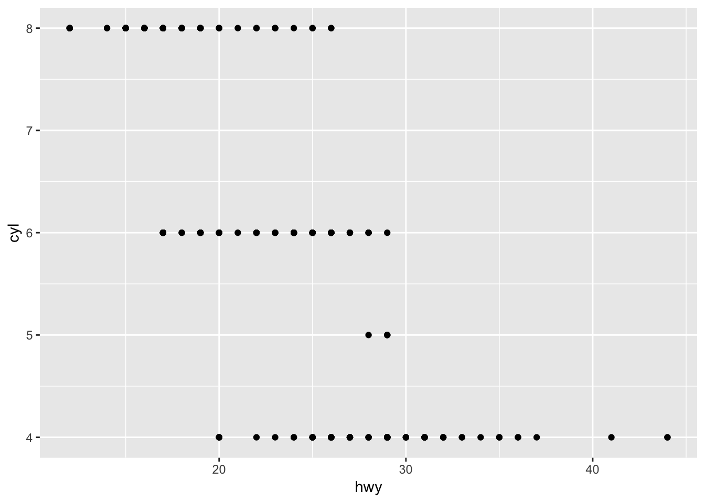
Но если параметры одни и те же, а требуется построить разные геометрии, то лучше прописать общие параметры вынося их “за скобки” Var 2
ggplot(data = mpg, aes(x = hwy, y = cyl))+
geom_point()
Упражнение 3.2.5
What happens if you make a scatterplot of class vs drv? Why is the plot not useful?
Оба параметра являются категориальными, или описательными. Можно построить <chr> от <chr>.
ggplot(data = mpg) + geom_point(mapping = aes(x = class, y = drv))
Но с точки зрения аналитики, такая информация не несёт большой пользы. В конкретном примере можно только сказать что, все автомобили класса 2seater имеют задний привод. А в классе subcompact есть все типы привода.
3.3 Эстетика визуализации
Упражнения 3.3.1
What’s gone wrong with this code? Why are the points not blue? {.unnumbered}
ggplot(data = mpg) +
geom_point(mapping = aes(x = displ, y = hwy, colour = "blue"))
Всё потому что colour не вынес за скобки, потому что colour это параметр функции geom_point(), not aes() правильно вот так
ggplot(data = mpg) +
geom_point(mapping = aes(x = displ, y = hwy), colour = "blue")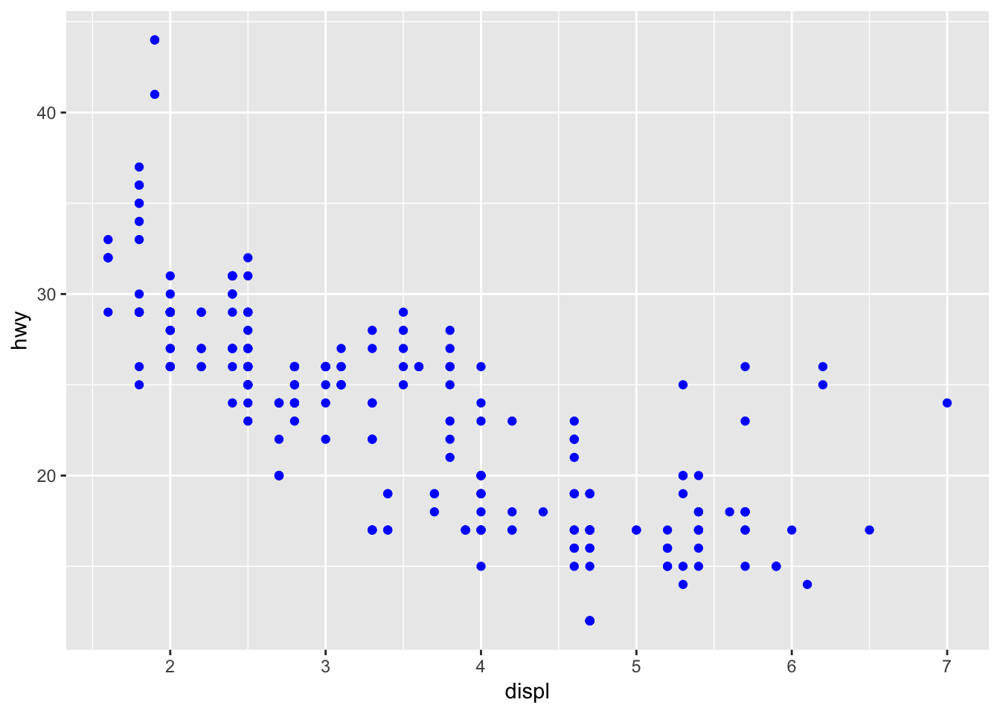
Упражнения 3.3.2
Which variables in mpg are categorical? Which variables are continuous? (Hint: type ?mpg to read the documentation for the dataset). How can you see this information when you run mpg? {.unnumbered}
Это те факторы, которые позволяют разделить на показатели. Чтобы понять какие факторы являются категориальными можно воспользоваться функцией glimpse(), которая показывает тип каждого столбца. Соответственно, те что <chr> и есть категориальные:
glimpse(mpg)## Observations: 234
## Variables: 11
## $ manufacturer <chr> "audi", "audi", "audi", "audi", "audi", "audi", "...
## $ model <chr> "a4", "a4", "a4", "a4", "a4", "a4", "a4", "a4 qua...
## $ displ <dbl> 1.8, 1.8, 2.0, 2.0, 2.8, 2.8, 3.1, 1.8, 1.8, 2.0,...
## $ year <int> 1999, 1999, 2008, 2008, 1999, 1999, 2008, 1999, 1...
## $ cyl <int> 4, 4, 4, 4, 6, 6, 6, 4, 4, 4, 4, 6, 6, 6, 6, 6, 6...
## $ trans <chr> "auto(l5)", "manual(m5)", "manual(m6)", "auto(av)...
## $ drv <chr> "f", "f", "f", "f", "f", "f", "f", "4", "4", "4",...
## $ cty <int> 18, 21, 20, 21, 16, 18, 18, 18, 16, 20, 19, 15, 1...
## $ hwy <int> 29, 29, 31, 30, 26, 26, 27, 26, 25, 28, 27, 25, 2...
## $ fl <chr> "p", "p", "p", "p", "p", "p", "p", "p", "p", "p",...
## $ class <chr> "compact", "compact", "compact", "compact", "comp...Упражнения 3.3.3
Map a continuous variable to color, size, and shape. How do these aesthetics behave differently for categorical vs. continuous variables? {.unnumbered}
Непрерывные переменные, это такие переменные которые принимают значения в некотором диапазоне. Непрерывной переменной является например cty, city miles per gallon, и показывает сколько проедет автомобиль в черте горда на один галлон топлива. Если сопоставить этой переменной цвет то получится
ggplot(mpg, aes(x = displ, y = hwy, colour = cty)) +
geom_point()
Цвет распределяется в диапазоне переменной cty, то есть в пределах от примерно 10 до 35. Попробуем теперь соспоставить размер
ggplot(mpg, aes(x = displ, y = hwy, size = cty)) +
geom_point()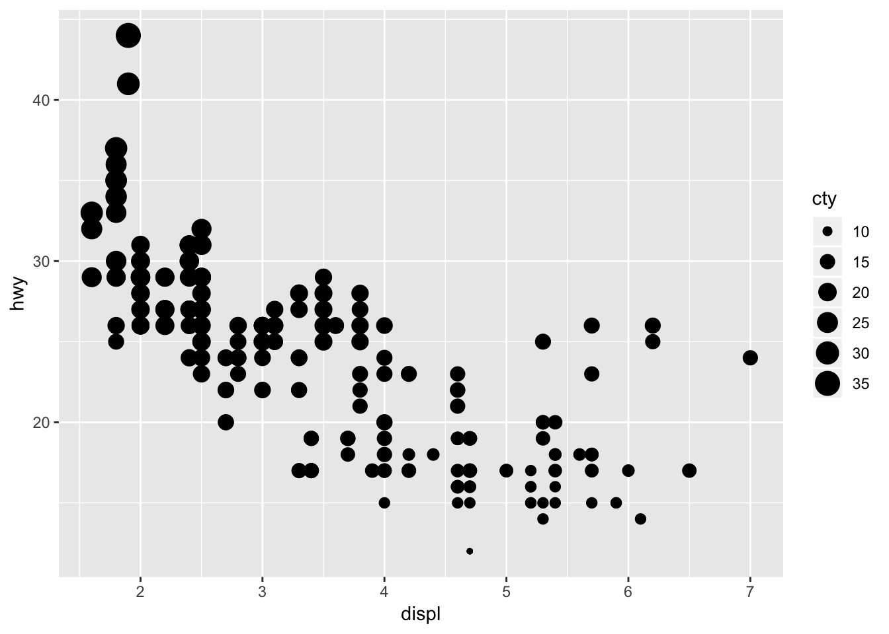
В принципе получается такая же картина, только точки выделены не цветом, а размером. И наконец, сопоставим форму непрерывной переменной
#ggplot(mpg, aes(x = displ, y = hwy, shape = cty)) + geom_point()А вот хуюшки. Программа выдаст Ошибка: A continuous variable can not be mapped to shape. Непрерывные переменные не соотносятся с атрибутом shape, так сделано специально. Потому что фигур всего 24, а наборов значений у непрерывной переменной может быть сколь угодно много
Упражнения 3.3.4
What happens if you map the same variable to multiple aesthetics? {.unnumbered}
Связать можно, вот например, переменная drv для цвета и для формы
ggplot(mpg, aes(x = displ, y = hwy, color = drv, shape = drv)) + geom_point()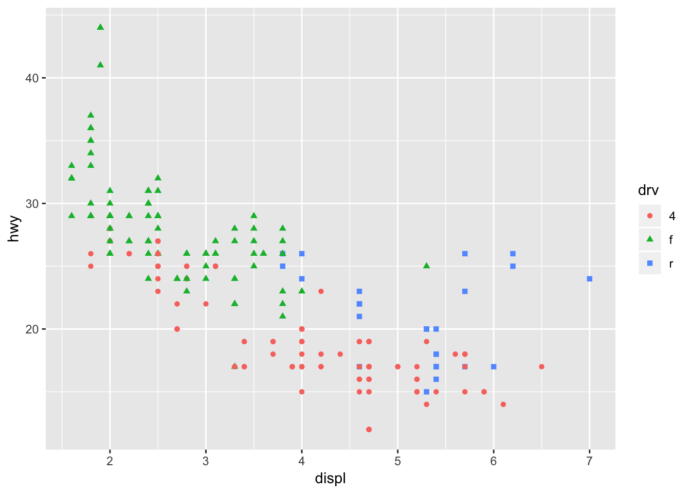
но это будет избыточное выделение.
Упражнения 3.3.5
What does the stroke aesthetic do? What shapes does it work with? (Hint: use ?geom_point)
stroke это размер границы фигуры. Он работает с фигурами, у которых помимо полной заливки есть цвет границы т.е. фигуры 21-24 
Иллюстрирующий пример. Вот построение обычными точками
ggplot(mpg, aes(hwy, cyl))+
geom_point()
Теперь зададим красную заливку, и размер границы фигуры \(2\)
ggplot(mpg, aes(hwy, cyl)) +
geom_point(shape=21,colour="black",fill="red",size=3,stroke=2)Ну а теперь \(5\)
ggplot(mpg, aes(hwy, cyl)) +
geom_point(shape=21,colour="black",fill="red",size=3,stroke=5)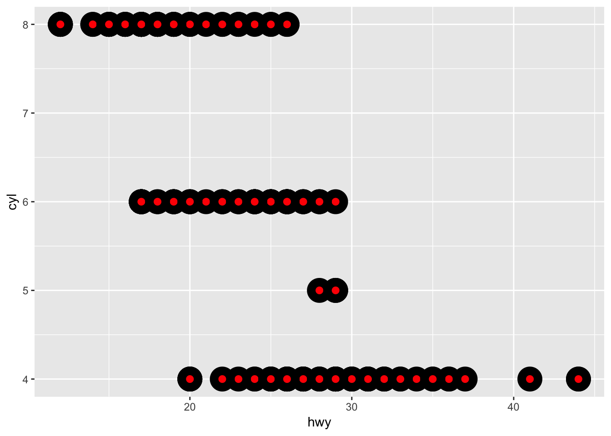
Упражнения 3.3.6
What happens if you map an aesthetic to something other than a variable name, like aes(colour = displ < 5)?
Визуальные атрибуты можно задавать и логическими выражениями, как допустим в таком выражении:
ggplot(mpg, aes(displ,hwy, color = displ < 2)) +
geom_point()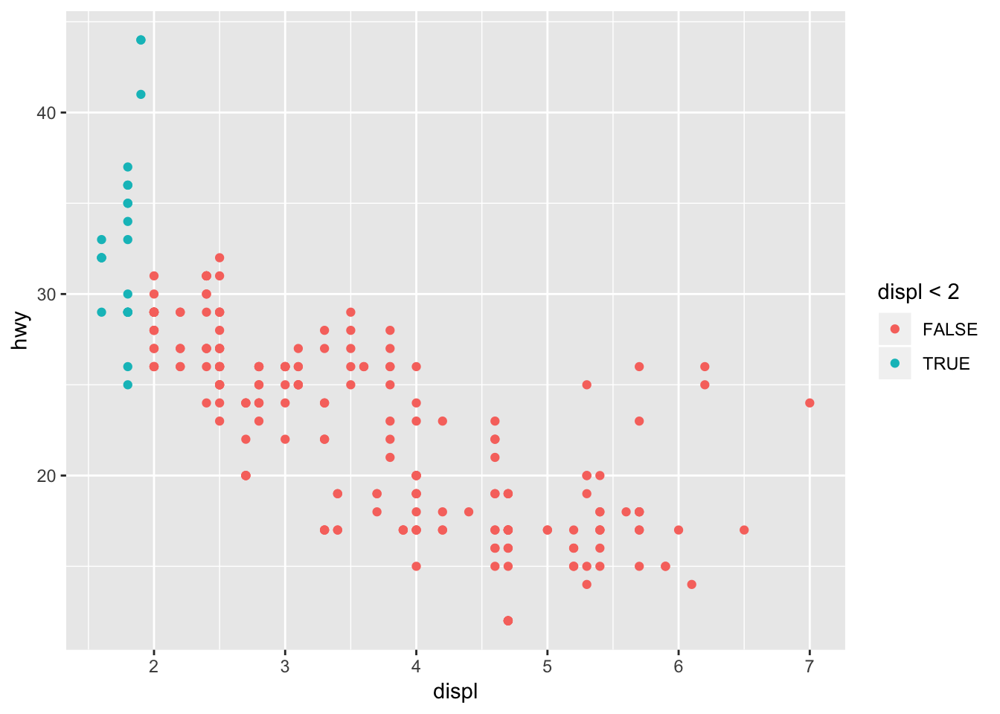
ggplot(mpg, aes(displ,hwy, color = displ < 4)) +
geom_point()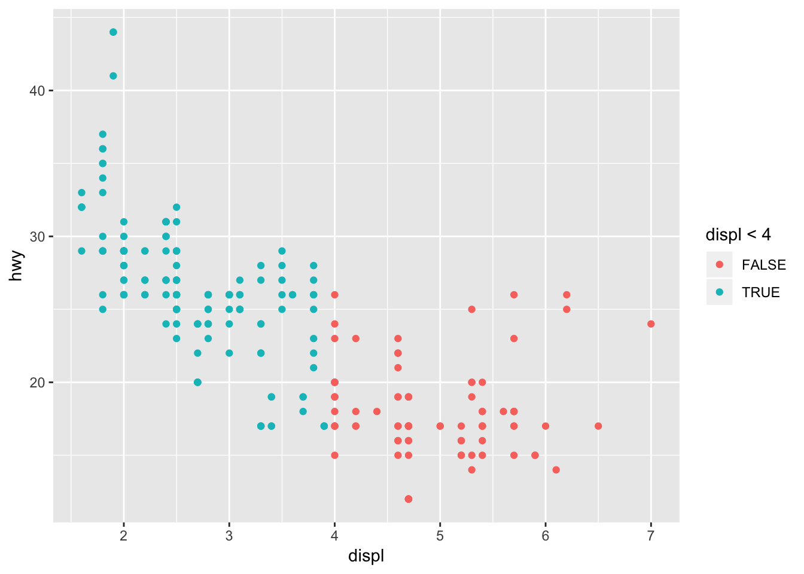
ggplot(mpg, aes(displ,hwy, size = displ > 3)) +
geom_point()## Warning: Using size for a discrete variable is not advised.
К тому же R ругается, что лучше бы такое не делать ## Распространённые ошибки Проблемы случаются и это норм. Если что-то не получается, чекни код.
Часто бывает что поставил + не туда. Он должен быть в конце строки, а не в начале.
3.4 Панели
Упражнение 3.5.1
What happens if you facet on a continuous variable?
Как это работает.
Построим график highway miles per gallon от engine displacement, in litres.
ggplot(mpg, aes(x = displ, y = hwy)) +
geom_point()
Теперь разделим на “окошки” т.е. возьмём срез графиков с теми же дискретными переменными, но в разрезе типа привода автомобиля drv от количества цилиндров cyl.
ggplot(mpg, aes(x = displ, y = hwy)) +
geom_point() +
facet_grid(drv~ cyl) Получилось \(12\) панелей, потому что
Получилось \(12\) панелей, потому что drv дискретная, ограниченная переменная, у неё всего три набора значения (\(4, f, d\)). Количество цилиндров cyl тоже ограниченная \(4,5,6,8\). Поэтому получилось \(3*4=12\) значений. Так как панелей получилось немного, такое представление осязаемо, с ним можно работать, оно информативно.
Если мы попробуем построить в одном измерении непрерывную переменную. То количество панелей возрастёт на количество значений этой переменной. Получится не очень информативно. Заменим в этом же построении количество цилиндров cyl на расстояние, пройденное за один галлон топлива в городской черте cty. Это непрерывная переменная, у которой много значений.
ggplot(mpg, aes(x = displ, y = hwy)) +
geom_point() +
facet_grid(drv~cty) Вот что произойдет, если параметром для панели задать непрерывную переменную. Будет много окошек, информативность представленной информации падает.
Вот что произойдет, если параметром для панели задать непрерывную переменную. Будет много окошек, информативность представленной информации падает.
Упражнение 3.5.2
What do the empty cells in plot with facet_grid(drv ~ cyl) mean? How do they relate to this plot?
Построим панели по заданному условию
ggplot(mpg, aes(x = displ, y = hwy)) +
geom_point() +
facet_grid(drv~cyl)
Пустые ячейки
- \(cyl(5):drv(4)\);
- \(cyl(4):drv(r)\);
- \(cyl(5):drv(r)\);
говорят о том, что нет точек удовлетворяющих этим разрезам данных. Иначе говоря, в наборе данных mpg
- нет полноприводных авто с 5 цилиндрами
- заднеприводных авто с 4 цилиндрами
- заднеприводных авто с 5 цилиндрами
Построим заданную функцию
ggplot(data = mpg) +
geom_point(mapping = aes(x = drv, y = cyl))
Она соотносится с построенными выше панелями в том, что показывает отсутствие данных в комбинациях переменных drv:cyl
Упражнение 3.5.3
What plots does the following code make? What does «.» do?
ggplot(data = mpg) +
geom_point(mapping = aes(x = displ, y = hwy)) +
facet_grid(drv ~ .)
ggplot(data = mpg) +
geom_point(mapping = aes(x = displ, y = hwy)) +
facet_grid(. ~ cyl)
Сравним с оригиналом:
ggplot(data = mpg) +
geom_point(mapping = aes(x = displ, y = hwy)) +
facet_grid(drv ~ cyl)
Как видно на самих построениях, точка убирает одно из измерений панели следующим образом:
Если точка стоит в первой координате, (. ~ param), то убираются строки Если точка стоит во второй координате, (param ~ .), то убираются столбцы
Упражнение 3.5.4
Take the first faceted plot in this section:
ggplot(data = mpg) +
geom_point(mapping = aes(x = displ, y = hwy)) +
facet_wrap(~ class, nrow = 2)
What are the advantages to using faceting instead of the colour aesthetic? What are the disadvantages? How might the balance change if you had a larger dataset?
Для того чтобы сравнить это цветное выделение с выделением плитками. Посмотрим как выглядит выделение того же построения данных цветом:
ggplot(data = mpg) +
geom_point(mapping = aes(x = displ, y = hwy, color = class))
Преимущество построения плитками заключается в том, что каждая группы “очищена” от мусора других групп. Плитками проще оценить распределение точек в отдельно взятой группе. Кроме этого если выделять цветом построения с большим количеством групп, то необходимо более ответственно подходить к подбору цветов `– нужно делать их более контрастными. Потому что при увеличении количества групп, цвета начинают сливаться, и уже трудно различать к какой категории относится точка.
Недостаток построяния плитками заключается в том, что каждая группа строится в отдельной системе координат. Трудно сравнивать распределение точек между группами.
Упражнение 3.5.5
Read ?facet_wrap. What does nrow do? What does ncol do? What other options control the layout of the individual panels? Why doesn’t facet_grid() have nrow and ncol arguments?
| аргумент | что значит |
|---|---|
nrow |
количество строк |
ncol |
количество столбцов |
Эти переменные нужны, так как срез графика в facet_wrap() происходит по одной дискретной переменной. В свою очередь facet_grid использует комбинации двех переменных поэтому для построения не нужно выбирать количество строк или колонок.
Упражнение 3.5.6
When using facet_grid() you should usually put the variable with more unique levels in the columns. Why?
Экраны наших компьютеров, книги, чертежи, имеют альбомную ориентацию и на одном носители умещается больше данных. Поэтому визуально проще сравнивать большее количество переменных по-горизонтали.
3.5 Геометрические объекты
Упражнения 3.6.1
What geom would you use to draw a line chart? A boxplot? A histogram? An area chart?
На русский язык “boxplot перевели как”полосчатый график“. Это конечно сбивает с толку, потому что boxplot это конечно”ящик с усами“. Исходя из этого
| Название графика | Объект geom |
|---|---|
| linechart | geom_line |
| boxplot | geom_boxplot |
| histogram | geom_histogram |
| area chart | geom_area |
Упражнения 3.6.2
Run this code in your head and predict what the output will look like. Then, run the code in R and check your predictions.
Это будет распределение displ от hwy. С цветом точек в зависимости от drv, т.е. три цвета - зелёный, красный и голубой. В этой же системе координат будет построена линия среднеквадратичного приближения без доверительного интервала с тем же цветом, что и точки.
ggplot(data = mpg, mapping = aes(x = displ, y = hwy, colour = drv)) +
geom_point() +
geom_smooth(se = FALSE)## `geom_smooth()` using method = 'loess' and formula 'y ~ x'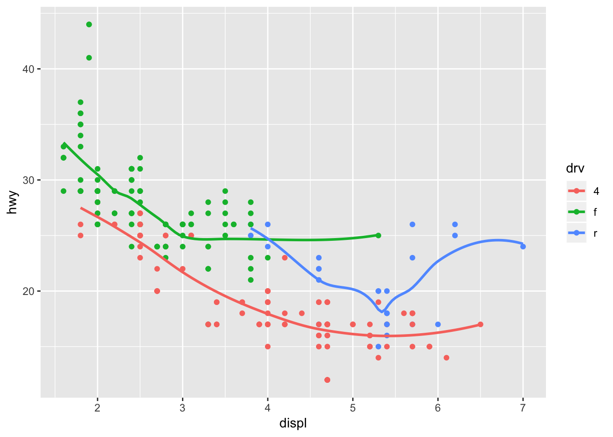
Поправочка - будет три линии приближений с цветом, соответсвующим цвету точек, по которым строится это приближение
Упражнения 3.6.3
What does show.legend = FALSE do? What happens if you remove it? Why do you think I used it earlier in the chapter?
Автор имеет в виду этот пример
ggplot(mpg) +
geom_smooth(
mapping = aes(displ, hwy, colour = drv),
show.legend = FALSE
)## `geom_smooth()` using method = 'loess' and formula 'y ~ x'
Инструкция show.legend распоряжает показывать легенду графика или нет. По умолчанию эта инструкция имеет значение TRUE. В примере из книги, инструкция show.legend = FALSE использовалась намеренно, чтобы в максимальном размере уместить в одну строку три графика. Тот же график с легендой выглядит вот так:
ggplot(mpg) +
geom_smooth(
mapping = aes(displ, hwy, colour = drv)
)## `geom_smooth()` using method = 'loess' and formula 'y ~ x'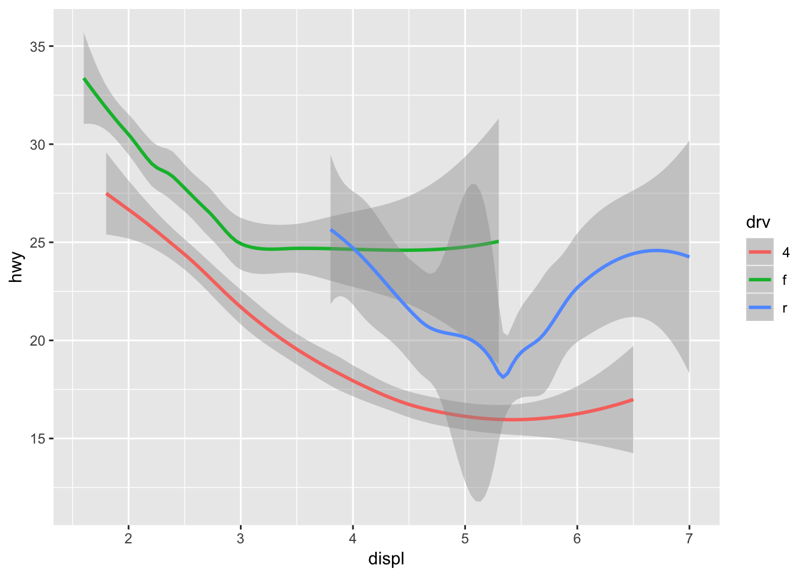
Упражнения 3.6.4
What does the se argument to geom_smooth() do?
Аргумент se распоряжает показывать ли доверительный интервал или нет. По умолчанию этот интервал показывается. В примере ниже доверительный интервал показывается:
ggplot(mpg) +
geom_smooth(mapping = aes(displ, hwy))## `geom_smooth()` using method = 'loess' and formula 'y ~ x'
Теперь уберём его:
ggplot(mpg) +
geom_smooth(mapping = aes(displ, hwy), se = FALSE)## `geom_smooth()` using method = 'loess' and formula 'y ~ x'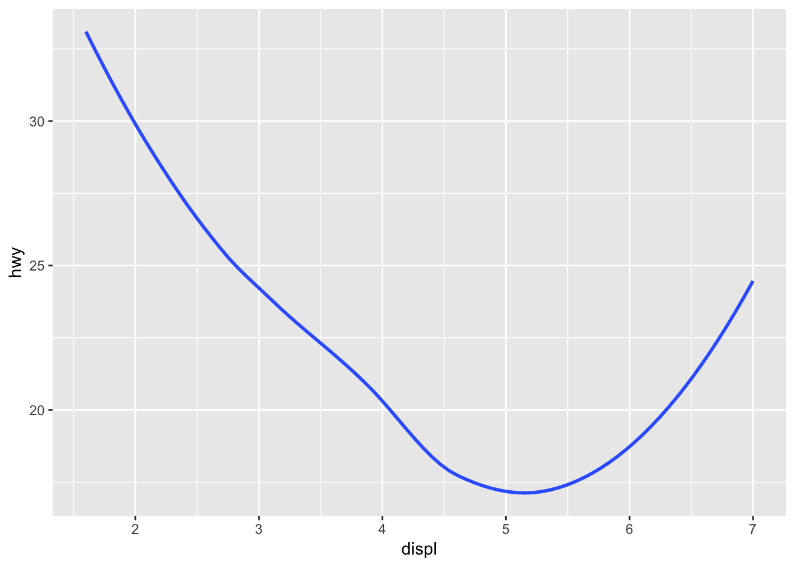
Упражнения 3.6.5
Will these two graphs look different? Why/why not?
ggplot(data = mpg, mapping = aes(x = displ, y = hwy)) +
geom_point() +
geom_smooth()ggplot() +
geom_point(data = mpg, mapping = aes(x = displ, y = hwy)) +
geom_smooth(data = mpg, mapping = aes(x = displ, y = hwy))Эти графики будут идентичными, потому что в первом случае в функции ggplot() задаются исходные условия сразу для всех функций, которые будут строится на этом поле построения. А во втором случае, все исходные условия для построений указаны в каждой функции индивидуально. И так как различий в этих условиях нет, то выглядеть они будут одинаково:
ggplot(data = mpg, mapping = aes(x = displ, y = hwy)) +
geom_point() +
geom_smooth()## `geom_smooth()` using method = 'loess' and formula 'y ~ x'
ggplot() +
geom_point(data = mpg, mapping = aes(x = displ, y = hwy)) +
geom_smooth(data = mpg, mapping = aes(x = displ, y = hwy))## `geom_smooth()` using method = 'loess' and formula 'y ~ x'
Упражнения 3.6.6
Recreate the R code necessary to generate the following graphs. 
- В левом верхнем графике наложено два построения. Первое
geom_point()- обычное построение без какой либо группировки и цветового выделения. Второеgeom_smouth()- построение распределения без группировки и цветового выделения, без построения доверительного интервала. Так как у обоих построений одинаковые исходные условия, их можно “вынести за скобки”, то есть указать в “родительском”ggplot():
ggplot(mpg, mapping = aes(displ, hwy)) +
geom_point() +
geom_smooth(se = FALSE)## `geom_smooth()` using method = 'loess' and formula 'y ~ x'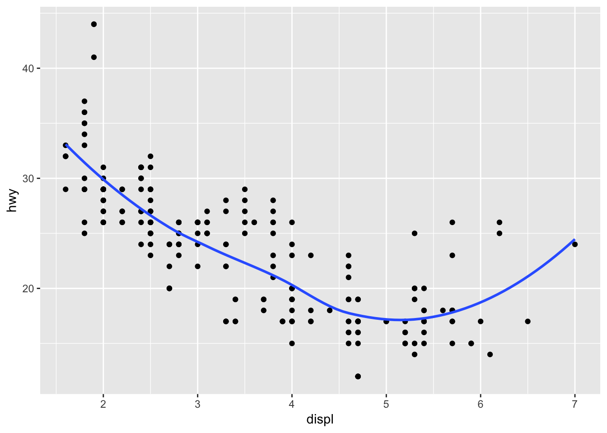
- В правом верхнем графике наложено два построения. Первое
geom_point()- обычное построение без какой либо группировки и цветового выделения. Второеgeom_smouth()- построение распределения с группировкой по признакуdrv, без построения доверительного интервала. Так как у двух постройний разные условия, лучше для каждого прописать исходные данные индивидуально
ggplot(mpg) +
geom_point(mapping = aes(displ, hwy)) +
geom_smooth(mapping = aes(displ, hwy, group = drv), se = FALSE)## `geom_smooth()` using method = 'loess' and formula 'y ~ x'
- В левом среднем графике наложено два построения. Первое
geom_point()- с цветовой группировкой по признакуdrv. Второеgeom_smouth()- построение распределения с цветовой группировкой по признакуdrv, без построения доверительного интервала. Так как у обоих построений одинаковые исходные условия, их можно “вынести за скобки”, то есть указать в “родительском”ggplot():
ggplot(mpg, mapping = aes(displ, hwy, colour = drv)) +
geom_point() +
geom_smooth(se = FALSE)## `geom_smooth()` using method = 'loess' and formula 'y ~ x'
- В правом среднем графике наложено два построения. Первое
geom_point()- с цветовой группировкой по признакуdrv. Второеgeom_smouth()- построение распределения без группировки и цветового выделения, без построения доверительного интервала. Так как у двух постройний разные условия, лучше для каждого прописать исходные данные индивидуально:
ggplot(mpg) +
geom_point(mapping = aes(displ, hwy, colour = drv)) +
geom_smooth(mapping = aes(displ, hwy), se = FALSE)## `geom_smooth()` using method = 'loess' and formula 'y ~ x'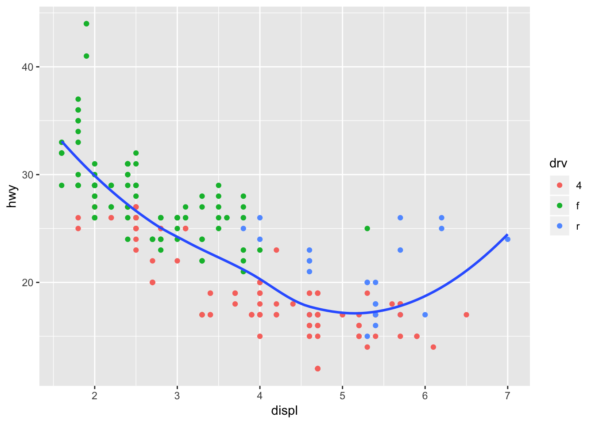
- В левом нижнем графике наложено два построения. Первое
geom_point()- с цветовой группировкой по признакуdrv. Второеgeom_smouth()- построение распределения с группировкой по признакуdrv, с выделением каждой кривой группы разным типом линии, без построения доверительного интервала. Так как у двух постройний разные условия, лучше для каждого прописать исходные данные индивидуально:
ggplot(mpg) +
geom_point(mapping = aes(displ, hwy, colour = drv)) +
geom_smooth(mapping = aes(displ, hwy, linetype = drv), se = FALSE)## `geom_smooth()` using method = 'loess' and formula 'y ~ x'
- В правом нижнем графике только одно построение
geom_point()- с цветовой группировкой по признакуdrvи толстыми белыми границами у точек.
ggplot(mpg, mapping = aes(displ, hwy, fill = drv)) +
geom_point(shape = 21, colour = "white", size = 4, stroke = 4)
3.6 Статистические преобразования
Упражнения 3.7.1
What is the default geom associated with stat_summary()? How could you rewrite the previous plot to use that geom function instead of the stat function?
Для того чтобы ответить на этот вопрос, необходимо открыть help - ?stat_summary
stat_summary(mapping = NULL, data = NULL, geom = "pointrange", position = "identity", ..., fun.data = NULL, fun.y = NULL, fun.ymax = NULL, fun.ymin = NULL, fun.args = list(), na.rm = FALSE, show.legend = NA, inherit.aes = TRUE)
Это и есть ответ - со статистикой stat_summary() связана геометрия geom = "pointrange".
Теперь ответим на вопрос, как можно переписать код
ggplot(data = diamonds) +
stat_summary(
mapping = aes(x = cut, y = depth),
fun.ymin = min,
fun.ymax = max,
fun.y = median
)
Необходимо заменить stat_summary() на geom_pointrange() и вставить название необходимой статистики:
ggplot(data = diamonds) +
geom_pointrange(
mapping = aes(x = cut, y = depth),
stat = "summary",
fun.ymin = min,
fun.ymax = max,
fun.y = median
)
Упражнения 3.7.2
What does geom_col() do? How is it different to geom_bar()?
Функции имеют разные статистики по умолчанию. geom_bar() иметт stat_count(), а geom_col() имет stat_identity() Т.е. geom_bar() считает, сколько наблюдений попадает в просматриваемый диапазон и столбец показывает количество попавших наблюдений в диапазон. А geom_col() - строит столбцы по количеству наблюдений в диапазоне, а geom_bar() число наблюдений.
Упражнения 3.7.3
Most geoms and stats come in pairs that are almost always used in concert. Read through the documentation and make a list of all the pairs. What do they have in common?
Общие элементы у статистик и геометрий это aes(), position, а пары геометрия-статистика следующие:
geom_ |
stat_ |
|---|---|
path |
eclipse, function |
point |
identity, unique |
tile |
summary_2d |
hex |
summary_hex |
pointrange |
summary_bin, summary |
Упражнения 3.7.4
What variables does stat_smooth() compute? What parameters control its behavior?
y- predicted value, прогнозируемое значениеymin- lower pointwise confidence interval around the mean, нижний уровень доверительного интервала среднего значенияymax- upper pointwise confidence interval around the mean, верхний уровень доверительного интервала среднего значенияse- standard error, стандтартное отклонение
Я так полагаю, параметры которые регулируют поведение функции, это специальные методы. Если это не так, то я однажды вернусь сюда и дополню этот ответ.
Упражнения 3.7.5
In our proportion bar chart, we need to set group = 1 Why? In other words what is the problem with these two graphs?
Graph #1
ggplot(data = diamonds) +
geom_bar(mapping = aes(x = cut, y = ..prop..))Graph #2
ggplot(data = diamonds) +
geom_bar(mapping = aes(x = cut, fill = color, y = ..prop..))Если не указать значение group, то все столбики то есть построения будут иметь prop = 1. Функция geom_bar по умолчанию использует статистику stat_count, которая считает количество значений внутри группы.
ggplot(data = diamonds) +
geom_bar(mapping = aes(x = cut, y = ..prop..))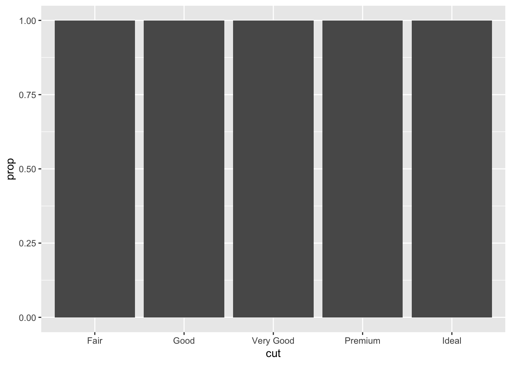
ggplot(data = diamonds) +
geom_bar(mapping = aes(x = cut, fill = color, y = ..prop..))
Проблема с этими двумя графиками заключается в том, что пропорции вычисляются внутри групп. Чтобы исправить, нужно указать группы в этих графиках:
ggplot(data = diamonds) +
geom_bar(mapping = aes(x = cut, y = ..prop.., group = 1))
ggplot(data = diamonds) +
geom_bar(mapping = aes(x = cut, fill = color, y = ..prop.., group = color))
3.7 Позиционные настройки
В заданиях часто используется фрейм данных diamonds, укажем его здесь:
| параметр | описание |
|---|---|
price |
цена в долларах ($326–$18,823) |
carat |
вес бриллианта (0.2–5.01) |
cut |
качество огранки (Fair, Good, Very Good, Premium, Ideal) |
color |
цвет бриллианта J (worst) to D (best) |
clarity |
чистота, или прозрачность (I1 (worst), SI2, SI1, VS2, VS1, VVS2, VVS1, IF (best) |
x |
длинна в мм |
y |
ширина в мм |
z |
высота в мм |
depth |
величина total depth percentage = z / mean(x, y) = 2 * z / (x + y) (от 43 до 79) |
table |
ширина верхней части алмаза относительно самой широкой точки (от 43 до 95) |
варианты использования аргумента position:
position = "identity". Строит столбцы с перекрыванием, т.е. в точности, где каждый объект должен находится. Это сложно заметить, поэтому если есть необходимость использовать эту настройку, то чтобы увидеть перекрытие нужно дополнительно указывать параметр прозрачностиalpha:
ggplot(
data = diamonds,
mapping = aes(x = cut, fill = clarity)) +
geom_bar(alpha = 1/5, position = "identity")
или делать объекты незалитыми убирая у атрибута fill цвет:
ggplot(
data = diamonds,
mapping = aes(x = cut, color = clarity)) +
geom_bar(fill = NA, position = "identity")
position = "fill"Создаёт стековые столбцы одинаковой высоты. Удобно сравнивать пропорции у значений.
ggplot(diamonds) +
geom_bar(
mapping = aes(x = cut, fill = clarity),
position = "fill"
)
position = "dodge". Строит перекрывающиеся столбцы рядом друг с другом
ggplot(diamonds) +
geom_bar(
mapping = aes(x = cut, fill = clarity),
position = "dodge"
)
position = "jitter". Не подходит для столбчатых диаграмм, но отлично подходит для диаграмм рассеивания. Если точки пересекаются, то чтобы показать истинное распределение значенийjitterдобавляет “шум”
ggplot(mpg) +
geom_point(
mapping = aes(displ, hwy),
position = "jitter"
)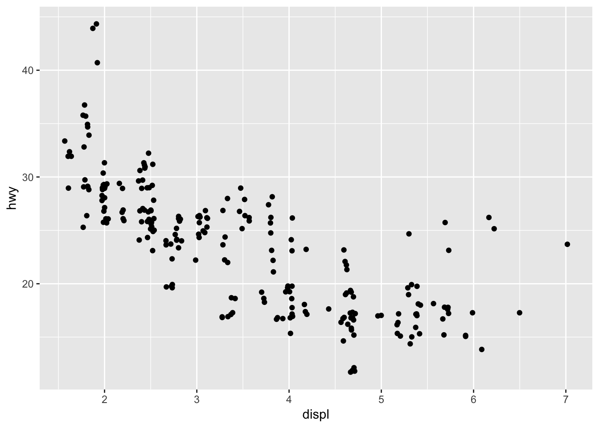
Упражнения 3.8.1
What is the problem with this plot? How could you improve it?
ggplot(data = mpg, mapping = aes(x = cty, y = hwy)) +
geom_point()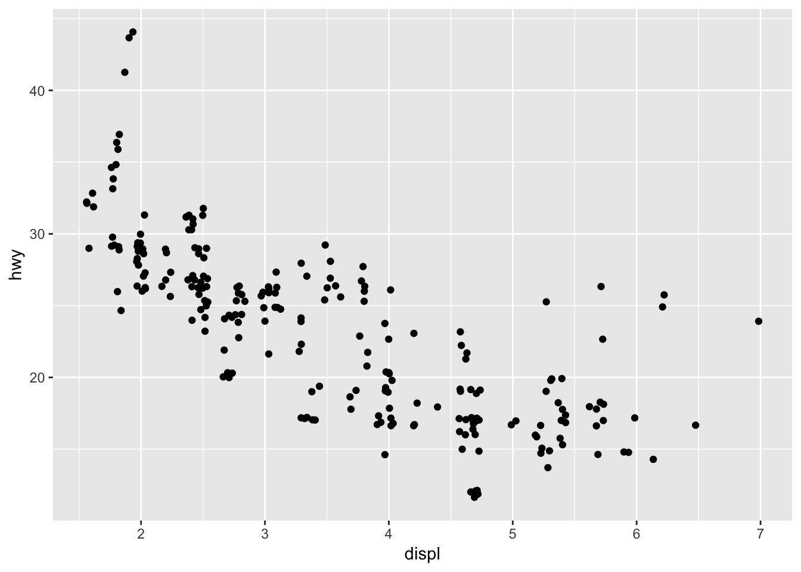
Это иллюстрация приведённой в книге проблемы наложение графиков. Все значения наносимые на график округляются - поэтому в одной точке может быть наложено несколько значений. Чтобы показать истинное количество точек в одном положении можно воспользоваться функцией geom_jitter, которой добавит случайный шум каждой точке.
ggplot(data = mpg, mapping = aes(x = cty, y = hwy)) +
geom_jitter()Упражнения 3.8.2
What parameters to geom_jitter() control the amount of jittering?
Согласно описанию geom_jitter() есть два параметра для управления флуктуациями:
widthдля вертикального распределенияheightдля горизонтального распределения
Разберём на примере. Возьмём диаграмму рассеивания:
ggplot(mpg, aes(cty, hwy)) + geom_point()
Добавим флуктуаций:
ggplot(mpg, aes(cty, hwy)) + geom_jitter()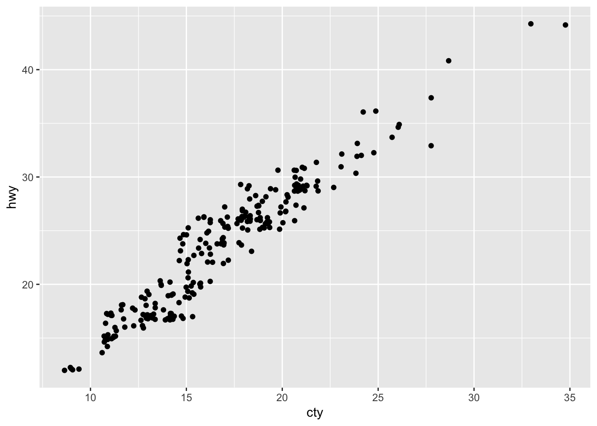
Отрегулируем умеренные флуктуации, установив значение параметров width и height равным \(0,5\)
ggplot(mpg, aes(cty, hwy)) + geom_jitter(width = 0.5, height = 0.5)Упражнения 3.8.3
Compare and contrast geom_jitter() with geom_count().
Возьмём данные из предыдущего примера, в которых уже известно, что происходит наложение данных:
ggplot(mpg, aes(cty, hwy)) + geom_point()
ggplot(mpg, aes(cty, hwy)) + geom_jitter()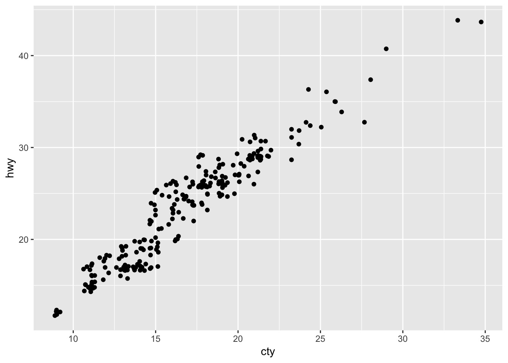
Теперь посмотрим что делает geom_count()
ggplot(mpg, aes(cty, hwy)) + geom_count()
Функция geom_count() тоже демонстрирует, что точки в построении накладываются. Но она делает это изящнее - в зависимости от количества точек, попавших в одно построение, увеличивается диаметр окружности.
- Преимущество
geom_count()- не изменяются координаты точек. - Недостаток
geom_count()- в зависимости от количества точек, радиус окружности может перекрывать рядом лежащие точки.
Впрочем, в этом случае можно использовать дополнительное выделение цветом:
ggplot(mpg, aes(cty, hwy, color = drv)) + geom_count()
Упражнения 3.8.4
What’s the default position adjustment for geom_boxplot()? Create a visualization of the mpg dataset that demonstrates it.
Согласно описанию функции geom_boxplot() значение по умолчанию у параметра position = "dodge2". Оба парамтера "dodge" и "dodge2" строят рядом перекрывающиеся объекты рядом. Разница в том, что "dodge" лепит их вплотную, а "dodge2" добавляет промежуток. Или не совсем…
ggplot(diamonds) +
geom_bar(
mapping = aes(x = cut, fill = clarity),
position = "dodge"
)
ggplot(diamonds) +
geom_bar(
mapping = aes(x = cut, fill = clarity),
position = "dodge2"
)
Пример для визуализации.
ggplot(mpg, aes(cty, hwy, color = drv)) + geom_boxplot()
Если использовать другое значение для position, то ящики будут накладываться друг на друга:
ggplot(mpg, aes(cty, hwy, color = drv)) + geom_boxplot(position = "identity")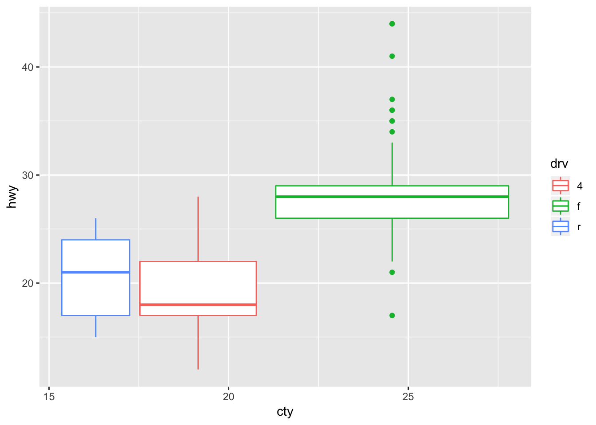
3.8 Системы координат
Упражнения 3.9.1
Turn a stacked bar chart into a pie chart using coord_polar()
Хорошо, сначала построим стековую диаграмму:
ggplot(mpg, aes(x = factor(1), fill = factor(cyl))) +
geom_bar()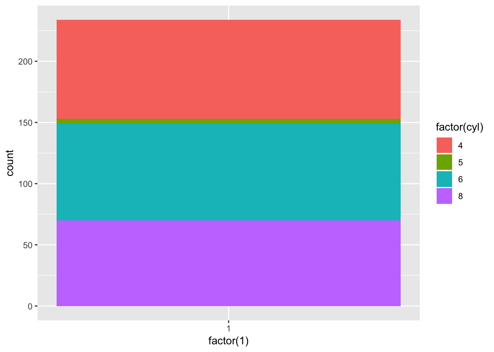
РАЗОБРАТЬСЯ ЧТО ДЕЛАЕТ factor()
Всё описание работы есть coord_polar() поэтому я ограничусь здесь только выполнением задания. В документации к построению “пирогов” сказано что, нужно относится к этим построениям максимально острожно, что коррелирует с тем, что говорится в дизайне и визуализации
ggplot(mpg, aes(x = factor(1), fill = factor(cyl))) +
geom_bar() + coord_polar(theta = "y")
Можно использовать пример из упражнений
ggplot(diamonds) +
geom_bar(
mapping = aes(x = cut, fill = clarity),
position = "fill"
)
ggplot(diamonds) +
geom_bar(
mapping = aes(x = cut, fill = clarity),
position = "fill") +
coord_polar(theta = "y")
Упражнения 3.9.2
What does labs() do? Read the documentation.
Функция labs() нужна для подписей всего того что отображается на графике. Всё описание есть в хэлпе.
ggplot(mpg) +
geom_point(mapping = aes(displ, hwy, colour = drv)) +
labs(color = "Новое название",
x = "ося порося",
y = "ося лося",
title = "Заголовок",
subtitle = "под-заголовок",
tag = "тэг")
Упражнения 3.9.3
What’s the difference between coord_quickmap() and coord_map()?
Coord_map проецирует часть земли, которая к слову является приблизительно сферической, на плоскую 2D-плоскость, используя любую проекцию, определенную пакетом mapproj. Карты, как правило, не сохраняют прямых линий, поэтому это требует значительных вычислений. Coord_quickmap - быстрое приближение, которое сохраняет прямые линии. Он лучше всего подходит для небольших площадей ближе к экватору.
По умолчанию, coord_map() использует проекцию Меркатора. Собственно в хэлпе больше информации с примерами. ggplot
Упражнения 3.9.4
What does the plot below tell you about the relationship between city and highway mpg? Why is coord_fixed() important? What does geom_abline() do?
ggplot(data = mpg, mapping = aes(x = cty, y = hwy)) +
geom_point() +
geom_abline() +
coord_fixed()
Функция coord_fixed() представляет количество единиц по оси Y, эквивалентное одной единице по оси X. Что в свою очередь гарантирует, что линия, созданная geom_abline(), имеет угол \(45^{\circ}\). 45-градусная линия позволяет легко сравнить пробег по шоссе и городу с корпусом, в котором город и шоссе MPG были равны.
ggplot(data = mpg, mapping = aes(x = cty, y = hwy)) +
geom_point() +
geom_abline()
3.9 Многослойная грамматика графики
Шаблон кода после всего пройденного материала выглядит следующим образом:
ggplot(data = <DATA>) +
<GEOM_FUNCTION>(
mapping = aes(<MAPPINGS>),
stat = <STAT>,
position = <POSITION>
) +
<COORDINATE_FUNCTION> +
<FACET_FUNCTION>3.10 Рабочий процесс: основы
3.11 Основы написания кода
Для вывода символа присвоения <- на MacBook, необходимо нажать комбинацию клавиш
3.12 Что представляют собой имена
R чувствителен к регистру.
3.13 Вызов функций
Не было упражнений
3.14 Упражнения
Упражнение 4.4.1
Why does this code not work?
my_variable <- 10
my_varıableLook carefully! (This may seem like an exercise in pointlessness, but training your brain to notice even the tiniest difference will pay off when programming.)
Код не работает, потому что допущена опечатка при вызове функции. Обратите внимание на i. Пишите без ошибок.
Упражнение 4.4.2
library(tidyverse)
ggplot(dota = mpg) +
geom_point(mapping = aes(x = displ, y = hwy))
fliter(mpg, cyl = 8)
filter(diamond, carat > 3)Должно быть так. В названии библиотеки забыли кавычки ""
library("tidyverse")При объявнлении исходных данных допущена ошибка. Вместо data написано dota
ggplot(data = mpg) +
geom_point(mapping = aes(x = displ, y = hwy))В следующем примере пришлось чуть повозиться. Тут одновременно несколько ошибок. Вместо filter() написано fliter(). А при объявлении, нужно было правильно сравнивать вместо = надо ==
filter(mpg, cyl = 8)И в последнем примере при объявлении фрейма данных допущена опечатка. Вместо diamond надо писать diamonds.
filter(diamonds, carat > 3)Упражнение 4.4.3
Press Alt + Shift + K. What happens? How can you get to the same place using the menus?
This gives a menu with keyboard shortcuts. This can be found in the menu under Tools -> Keyboard Shortcuts Help.